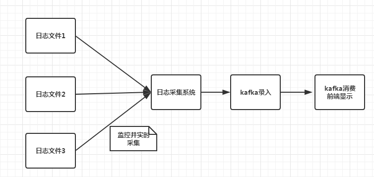
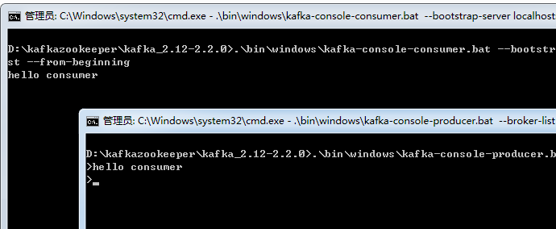
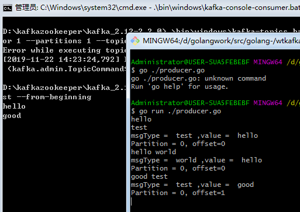

项目结构
本系列文章意在记录如何搭建一个高可用的日志采集系统，实际项目中会有多个日志文件分布在服务器各个文件夹，这些日志记录了不同的功能。随着业务的增多，日志文件也再增多，企业中常常需要实现一个独立的日志采集系统，实时采集各个日志信息，并记录和输出到控制台或网页上，方便监控和查询。
本文日志采集系统架构如下

日志采集系统监控各个日志文件，当日志文件有日志录入时，日志采集系统实时获取日志内容并下入kafka队列中，之后可以实现Web端从kafaka取出信息，并前端显示。也可以将kafka的信息控制台输出，这个主要是看具体需求。本系列文章主要讲述如何搭建kafaka服务，编写高并发日志采集系统，稳定高效录入信息，以及从kafka中读取采集的日志。
本节目标
1 配置kafka，并启动消息队列。
2 编写代码向kafka录入消息，并且从kafka读取消息。
kafka简介和搭建
Kafka是一种高吞吐量的分布式发布订阅消息系统，由Java编写，内部使用了zookeeper(分布式应用程序协调服务)，所以安装Kafka之前需要先安装jdk和zookeeper。
JDK安装
去官网https://www.oracle.com/technetwork/java/javase/downloads/jdk8-downloads-2133151.html下载jdk，按步骤安装。之后配置环境变量即可。
Zookeeper安装
这里说下windows安装流程，linux类似。
从网址http://zookeeper.apache.org/releases.html下载zookeeper，之后解压即可使用。我在windows创建了一个文件夹D:\kafkazookeeper，将zookeeper解压到该文件夹。打开D:\kafkazookeeper\zookeeper-3.4.14\conf，把zoo_sample.cfg复制一份命名为zoo.cfg，从文本编辑器里打开zoo.cfg修改如下内容
1 | dataDir=D:\\kafkazookeeper\\zookeeper-3.4.14\\data |
目录根据你个人设置就行了。接下来添加如下环境变量
1 | ZOOKEEPER_HOME: D:\kafkazookeeper\zookeeper-3.4.14 |
ZOOKEEPER_HOME值就是你的kafka安装目录。接下来进入D:\kafkazookeeper\zookeeper-3.4.14\bin启动zkServer.cmd
看到zookeeper服务跑起来了，默认端口为2181，不要关闭。
kafka安装
下载地址http://kafka.apache.org/downloads.html
将其解压到我自己的D:\kafkazookeeper目录下，打开D:\kafkazookeeper\kafka_2.12-2.2.0\config修改log.dirs，设置为
1 | log.dirs=D:\\kafkazookeeper\\kafka_2.12-2.2.0\\logs |
在kafka目录里执行如下命令,启动kafka
1 | .\bin\windows\kafka-server-start.bat .\config\server.properties |
测试kafka
创建topics
在kafka目录里执行如下命令
1 | .\bin\windows\kafka-topics.bat --create --zookeeper localhost:2181 --replication-factor 1 --partitions 1 --topic test |
这样我们创建了一个主题，这个主题相当于一个标签，用于消息读写。
打开一个Producer
同样在kafka目录下执行
1 | .\bin\windows\kafka-console-producer.bat --broker-list localhost:9092 --topic test |
这样我们基于test主题启动了一个生产者
打开一个Consumer
同样在kafka目录下执行
1 | .\bin\windows\kafka-console-consumer.bat --bootstrap-server localhost:9092 --topic test --from-beginning |
我们在生产者窗口写一些消息注入hello consumer，消费者窗口会取出消息并显示 hello consumer

实现代码向kafka写入消息
1 | func main() { |
上述代码基于本地端口9092创建了生产者，然后构造了消息的分区大小以及Key值，接下来循环读取终端录入信息，第一行为value，第二行为topic，然后将消息发送到kafka，并且打印存储的分区和位移。
我们运行我们的程序，录入消息，可以看到消息发送到kafka后被消费者获取。

下一篇，我们完善消费者程序，并且实现文件监控和读取。